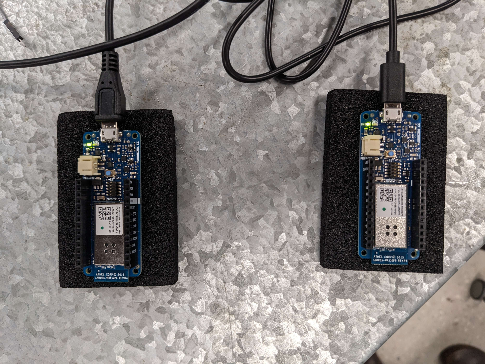

Entry 1 - 27/09/2023
Our starting concept was rather straightforward and easy to grasp: utilizing compass technology to
connect two individuals remotely. Picture mobilily being alerted when you and another user you know were
facing your devices towards each other. This idea fits the criteria of maintaining connections between
users whilst physical distance separates them. However, as we expressed our concept, much critical
reception was given to the idea, namely its similarity to other services.
 After some digging around, our group defined Snapchat's friend compass as a similar service to our own.
To set our idea apart, we decided to infuse an element of gamification. While Snapchat's friend compass
focused on straightforward location sharing, we aimed to make our experience more engaging and dynamic.
Instead of just notifying users of proximity, we envisioned turning the interaction into a game. Users
would receive challenges at select points during the day and required aligning their devices as their
means of interaction.
After some digging around, our group defined Snapchat's friend compass as a similar service to our own.
To set our idea apart, we decided to infuse an element of gamification. While Snapchat's friend compass
focused on straightforward location sharing, we aimed to make our experience more engaging and dynamic.
Instead of just notifying users of proximity, we envisioned turning the interaction into a game. Users
would receive challenges at select points during the day and required aligning their devices as their
means of interaction.
 After expressing this furthered concept, we faced the need to answer whether to develop our concept as a
wearable device or a smartphone application. As our group has experience in developing wearables and not
smartphone applications, we thought the call would be a rather easy one to make.
After expressing this furthered concept, we faced the need to answer whether to develop our concept as a
wearable device or a smartphone application. As our group has experience in developing wearables and not
smartphone applications, we thought the call would be a rather easy one to make.
 We then got tasked with envisioning our wearable device as a fashion statement, one that users would
need to proudly display as an integral part of their identity. To do this we decided on having the
wearable carry itself a high pedigree of form and function. Using black components and a see-through
exterior, much like the Nintendo Switch Pro Controller, we believed our wearable would fit the bill of
being considered a "fashion statement".
We then got tasked with envisioning our wearable device as a fashion statement, one that users would
need to proudly display as an integral part of their identity. To do this we decided on having the
wearable carry itself a high pedigree of form and function. Using black components and a see-through
exterior, much like the Nintendo Switch Pro Controller, we believed our wearable would fit the bill of
being considered a "fashion statement".
 While our device is innovative and enhances connectivity, we were then questioned if we consider it
under the realm of cybernetics or meta-human augmentation. The group does not consider it as such nor
that it needs to be since it is just a playful and interactive gadget, designed to augment social
connections rather than altering the user's physical or mental capabilities. It's important to
differentiate between technologies that enhance our social interactions and those that push the
boundaries of human capabilities.
While our device is innovative and enhances connectivity, we were then questioned if we consider it
under the realm of cybernetics or meta-human augmentation. The group does not consider it as such nor
that it needs to be since it is just a playful and interactive gadget, designed to augment social
connections rather than altering the user's physical or mental capabilities. It's important to
differentiate between technologies that enhance our social interactions and those that push the
boundaries of human capabilities.
Entry 2 - 5/10/2023
To start us off on our journey of creating this long-distance shootout game prototype, we sought two BBC
micro:bits to function as the microcontrollers fit for processing most of our hardware and software
needs. We chose the BBC micro:bits due to the group's previous experience in developing for them as well
as their ease of obtaining and developing for them.
This code is meant for two micro:bit devices and involves a simple multiplayer game using radio
communication and compass readings. The code initializes the radio communication with a specific group
(group 133) and sets the transmit power. It defines variables to keep track of the game state, such as
whether the micro:bit is the "parent," the current time, the start time, the other player's score, and
whether the game is active or if a player has been found. The code continuously reads the compass
heading and sends this data over the radio. The two micro:bits communicate by sending and receiving
numbers through the radio module. The game involves one micro:bit ("parent") looking for a specific
compass angle range (240 to 300) and the other micro:bit attempting to match the inverse. Once a match
is found, a heart is indicated on both micro:bits.
When deploying this code, the first step of the process is to calibrate the micro:bits' compass. To
calibrate these compasses the users must tilt the micro:bits in a way as to fill up the entire indicator
presented on the LED array; this process is required for both the parent and non-parent micro:bit. After
calibration is when the fun begins, now that both micro:bits are continuously sending each other the
direction they are facing, users are now indicated when the two micro:bits are facing the opposite
direction of each other (through the displayed sad face changing itself to a heart). This behavior is
displayed below in the provided gif (bear in mind due to the refresh rate of the camera used to record
such footage, the displays light up in a wave sort of formation).
 This implementation is surprisingly effective, bar a few issues. The first defect of note is the rather
poor accuracy of the two micro:bits direction sharing, this is to say that this prototype is error-prone
for not indicating a heart when the devices are facing each other and vice versa on displaying a heart
on both when they are in fact not. This accuracy issue likely stems due to the compass hardware present
on the micro:bits not meeting the demands of the complexity of the task, calling for a possible external
compass component to be wired and utilised instead. Another theory as to this inaccuracy is the volatile
nature of the calibration process for the micro:bits' compasses and how less there is a perfectly
replicable method of calibrating both micro:bits, there will always be a disparity between the data sent
from one another.
This implementation is surprisingly effective, bar a few issues. The first defect of note is the rather
poor accuracy of the two micro:bits direction sharing, this is to say that this prototype is error-prone
for not indicating a heart when the devices are facing each other and vice versa on displaying a heart
on both when they are in fact not. This accuracy issue likely stems due to the compass hardware present
on the micro:bits not meeting the demands of the complexity of the task, calling for a possible external
compass component to be wired and utilised instead. Another theory as to this inaccuracy is the volatile
nature of the calibration process for the micro:bits' compasses and how less there is a perfectly
replicable method of calibrating both micro:bits, there will always be a disparity between the data sent
from one another.
The second defect plaguing our prototype is the lack of recorded locations on the micro:bits, as per
this issue, the micro:bit will indicate a heart on both arrays if their faced directions are inverse of
each other whether they are or are not parallel with one another location wise. The only possible means
to fix such defect is deploying additional GPS components onto the micro:bits so they record and share
their location; with some added calculations in the code this will allow for the devices to know where
they must physically point in a 3D space as to be looking at the other device, rather than just going on
if they're facing opposite directions of one another.
Entry 3 - 12/10/2023
Our group decided to start using Arduino boards instead of micro:bits for our projects. We made this change because Arduino boards have shown enhanced compatibility with various components and sensors, making it easier for us to create this more complex project. While micro:bits are good for beginners, they have limitations when it comes to connecting and expanding with other hardware, which was holding us back. When we switched to Arduino, we were excited to try out a GPS module. With Arduino's compatibility and available libraries, it was easy to start testing what GPS technology could do. We used the specified library for our GPS module, which let us communicate with it and get location data. This opened up many possibilities, from real-time location tracking which will fix the aforementioned issues displayed by our micro:bit solution. Switching to Arduino and exploring GPS capabilities has made our projects more advanced and versatile. We now have the flexibility to choose from a wide range of components and sensors to reach our project goals. This change has been important for us, as it gives us the tools to take our projects to the next level.
Entry 4 - 19/10/2023
For our current project, we've carefully considered the components that are essential to achieve our
goals effectively. These components play a vital role in enhancing the project's functionality and user
experience.
First and foremost, the GPS module is a crucial part of our project. We've integrated a GPS module to
record the longitude and latitude data accurately. This data serves as the foundation for location-based
services, enabling us to track and record the precise geographical coordinates of our project. With this
information, we can implement features like real-time location tracking, geofencing, and distance
calculations, enhancing the overall utility of our project.
To calculate the direction faced, we've incorporated a compass module. This component provides us with
the ability to determine the orientation of the user or the device, adding a layer of orientation and
navigation to our project. This information can be used in various ways, such as providing turn-by-turn
directions or guiding the user based on their current heading. It significantly enhances the project's
user experience and makes it more versatile for our application.
Additionally, we've included a semicircle Glowbit equipped with RGB LEDs. This component serves as a
visual interface to relay direction and score information to the user. The RGB LEDs allow us to display
information using various colors and patterns, making the user experience more intuitive and engaging.
For example, we can use specific colors to represent different directions or scores, ensuring that users
can easily understand and interact with the project. This adds an element of gamification and visual
feedback that enhances the overall user engagement and usability of the project.

Entry 5 - 26/10/2023
Since Arduinos lack built-in radios like micro:bits, we've opted to leverage their Wi-Fi capabilities for seamless information exchange in our project. To make this happen, we're transitioning to using two "Maker1000" boards. One of these boards will act as a server Arduino, setting up a 2.4GHz network, while the other will serve as a client Arduino, connecting to this network. This setup allows us to establish a reliable communication channel between the devices, facilitating the exchange of crucial data, including GPS coordinates and directional information.  The written client and server code establishes an interplay for sharing location information.The server code processes incoming requests, retrieves the client's location, and calculates the direction between the client and server, making this information accessible via a web server. The client code, running on one Arduino, reads data from a sensor suite that includes a GPS module and a compass. It then utilizes Wi-Fi capabilities to connect to the server code running on another Arduino. The client regularly sends its latitude and longitude data to the server through HTTP requests. This directional information is then displayed by both devices in their serial monitor.
Entry 6 - 2/11/2023
With all the hardware now decided upon and interconnected, next in line is combining the provided
libraries as well as adding our code so as to have the two devices working together as intended. There
is already a loose demo that possesses close to our desired effect by relaying a directional point
through a glowbit corresponding to the attached compass module.
 The code implementation to gamify our devices remains to be implemented though, where one user must
face the other first. With the software close to completion, next in line is manufacturing a rig to
present our two devices in a desirable form factor. As the original concept of a watch-like wearable
wouldn't fit the dimensions necessary for reaching a sleek and elegant form factor given the amount of
internals, a change of plan is needed for the enclosure.
The code implementation to gamify our devices remains to be implemented though, where one user must
face the other first. With the software close to completion, next in line is manufacturing a rig to
present our two devices in a desirable form factor. As the original concept of a watch-like wearable
wouldn't fit the dimensions necessary for reaching a sleek and elegant form factor given the amount of
internals, a change of plan is needed for the enclosure.
There are two rather promising paths we can take instead for our devices' new form factor. First of
which is pivoting our design into that of a handheld, that with laser cut acrylic will possess ample
room in a compartment to fit the internals whilst still possessing a handle or wrist rest for easy
portability for the user.
The second potential design still plays into being a wearable but instead of only having the immediate
small footprint of the area above the rest to fit the components like the watch-like form factor would,
a more glove-centric design (like the one below) would provide ample room for fitting components whilst
still maintaining its fashion statement mantra as well as exceptional ease in movability.